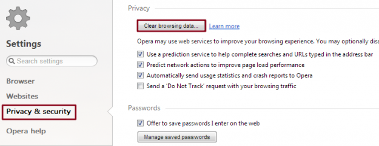
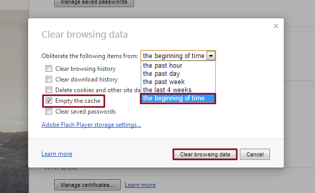

Step 1: Open settings — Launch Opera, click the main Opera button in the upper-left corner of the browser window and select the Settings option from the drop-down menu. Afterward, click the Privacy & security panel located on the left-hand side of the resulting window and click the gray Clear browsing data… button within the Privacy section near the top of the page.

Step 2: Clear the browser cache — Check the box directly to the left of the Empty the cache option near the bottom of the resulting pop-up window, along with any other browser data you wish to clear. Then, select the beginning of time option from the drop-down menu. Afterwards, click the gray Clear browsing data button in the bottom-right corner of the window.
